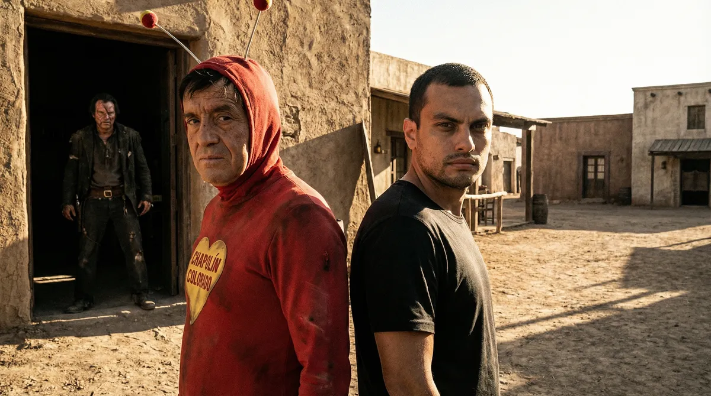
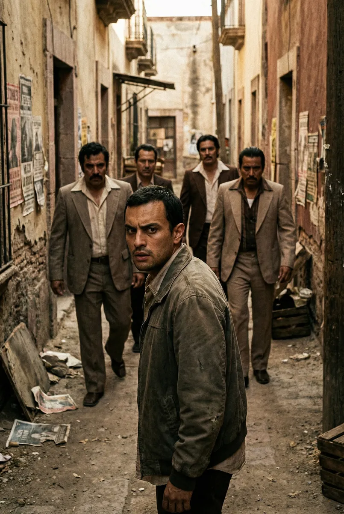
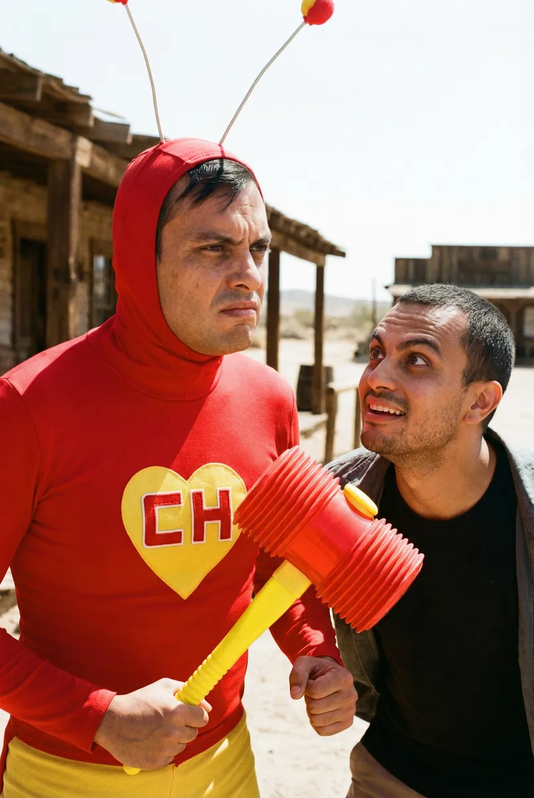
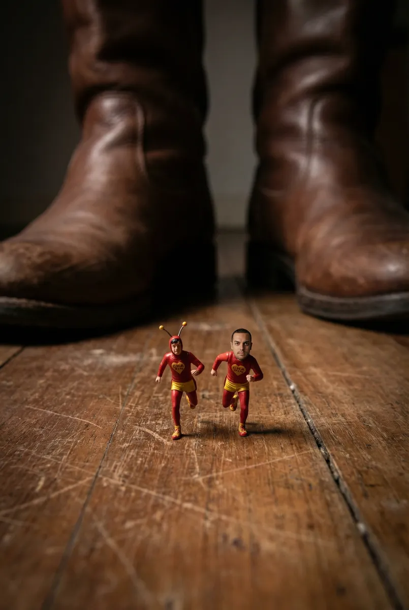
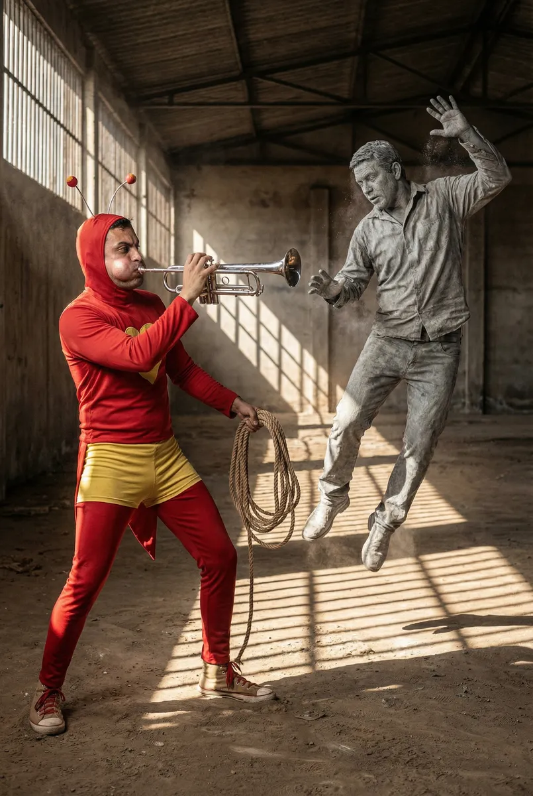
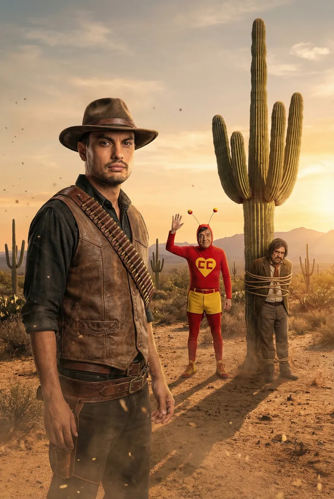

A Aliança de Vermelho: Ricardo e o Chapolin Colorado contra o Crime

Protagonizado por Ricardo
Capítulo 1
Ricardo encontrava-se encurralado nos becos empoeirados de uma vila mexicana pelos capangas do temível Tripa-Seca. Sem saída e cercado por bandidos de terno risca-de-giz, ele clamou aos céus: 'E agora, quem poderá me defender?'
Prompt: Realistic photography, wide shot, Ricardo looking worried in a dusty 1970s Mexican alleyway, group of menacing thugs in vintage suits closing in, cinematic lighting, gritty texture.

Capítulo 2
Com um estrondo e um tropeço cômico, o Chapolin Colorado surgiu do nada! 'Eu!', exclamou o herói de vermelho. Ricardo não acreditava que o Polegar Vermelho estava ali, empunhando sua Marreta Biônica com uma bravura desastrada.
Prompt: Realistic portrait of Chapolin Colorado in his iconic red suit with yellow heart logo, holding the Squeaky Mallet, determined expression, Ricardo standing beside him in awe, dusty atmosphere, film grain.

Capítulo 3
A confusão começou quando o Tripa-Seca sacou sua arma, mas Chapolin foi mais rápido e usou suas Pastilhas de Encolhimento. Ricardo e o herói ficaram minúsculos, correndo entre as pernas dos vilões para causar um caos absoluto no esconderijo.
Prompt: Macro photography, tiny Ricardo and tiny Chapolin running across a giant wooden floor, massive leather boots of the villains in the background, high tension, cinematic depth of field.

Capítulo 4
Tripa-Seca tentou fugir, mas Ricardo pegou a Corneta Paralisadora que o herói deixou cair. Com um sopro certeiro, Ricardo paralisou o vilão no meio do salto, permitindo que Chapolin finalizasse a captura com sua astúcia lendária.
Prompt: Action shot, Ricardo blowing a shiny silver horn, Tripa-Seca frozen in a mid-air dynamic pose like a statue, realistic textures, Chapolin preparing to tie him up, dramatic shadows.

Capítulo 5
Com o vilão derrotado e a paz restaurada, Chapolin Colorado deu um tapinha no ombro de Ricardo. 'Não contavam com minha astúcia!', disse o herói antes de partir rumo ao pôr do sol, deixando Ricardo como o novo herói da vila.
Prompt: Wide cinematic shot, golden hour sunset in the Mexican desert, Chapolin Colorado waving goodbye, Ricardo standing heroically in the foreground, Tripa-Seca tied up nearby, epic atmosphere.
